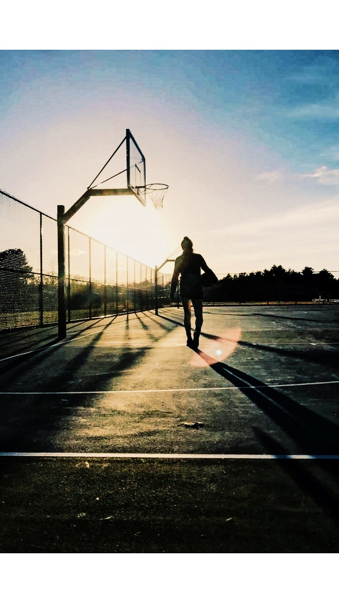
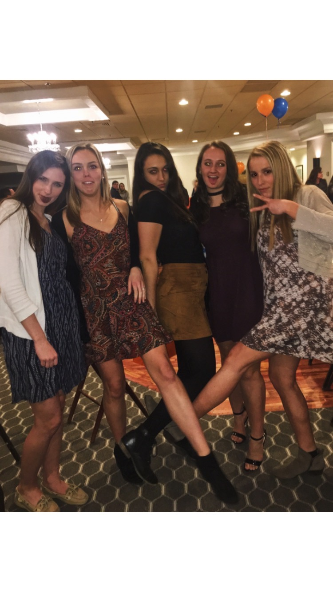

My Hobbies
Sports
I play Division 1 Basketball at the University of Maine, so being apart of the team takes up a lot of my time and is a huge part of my everyday life. A normal day for me consists of classes in the morning, followed by a lift and then film and practice. I am a shooting guard for the team, so I also find myself in the gym a lot putting up extra shots. I have played basketball all my life, and I am a huge Celtics fan. For college hoops, I have always loved Duke Men's Basketball.

School
As I mentioned on the homepage I am a business major here at the University of Maine. I am not sure what my major is yet, but I am leaning toward general management. I have ambitions to be a college basketball coach one day, however I also envision myself running some sort of business that has to do with basketball training as well as incorporating nutrition. I hope to utilize my business degree in some way, however, I am not sure of my plan as of now.
Other
In my free time when I am not at school or basketball, I enjoy hanging out with friends, listening to music, going to the beach, or going to a local coffee shop. I also value my time with my family a lot, and when I am home in the summer, I spend my free time watching movies or simply having good conversation with my parents and siblings. Below is a picture of my best friends from home: Morgan, Emma, Sophia, and Courtney!
